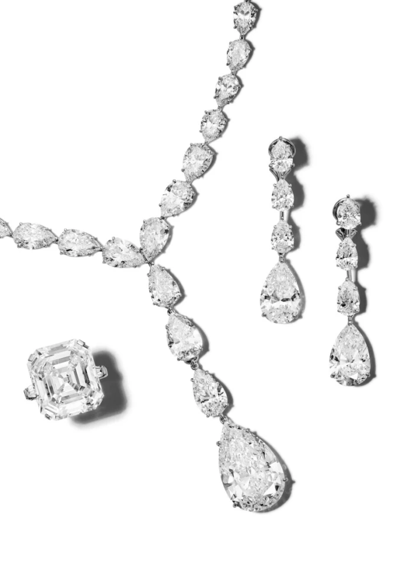
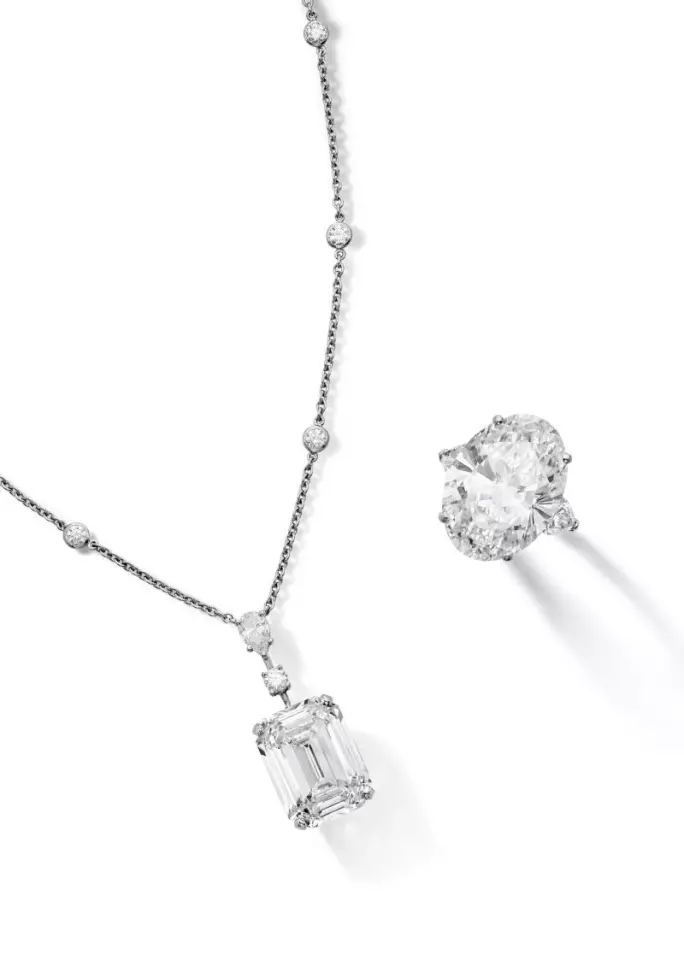
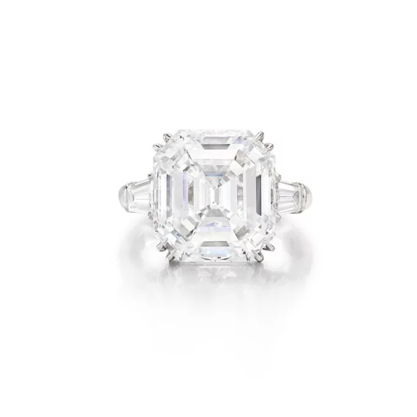
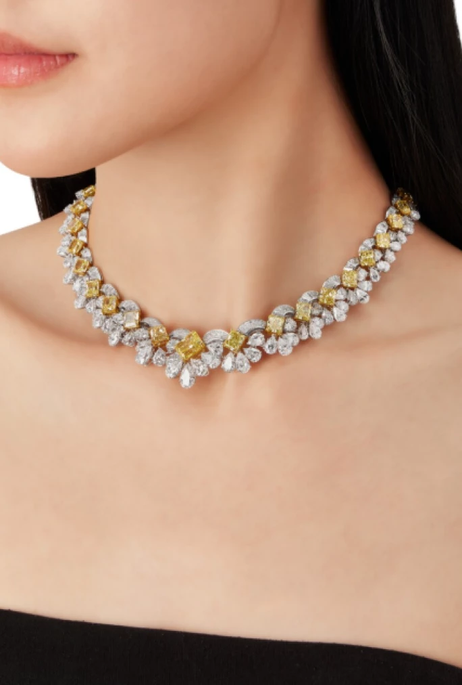
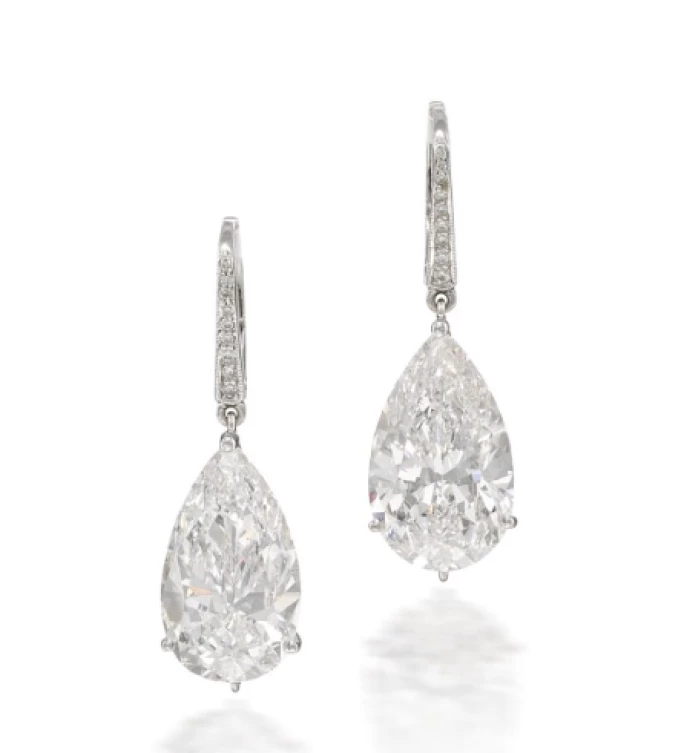
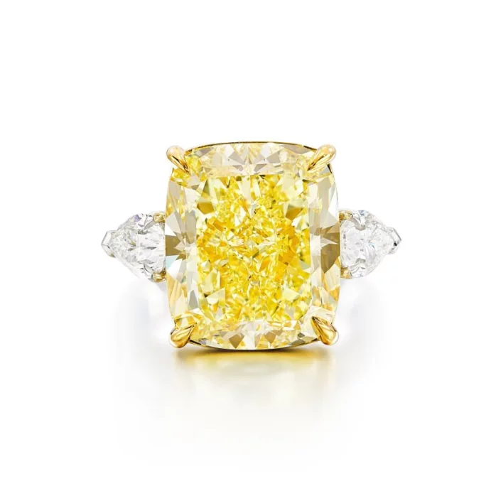
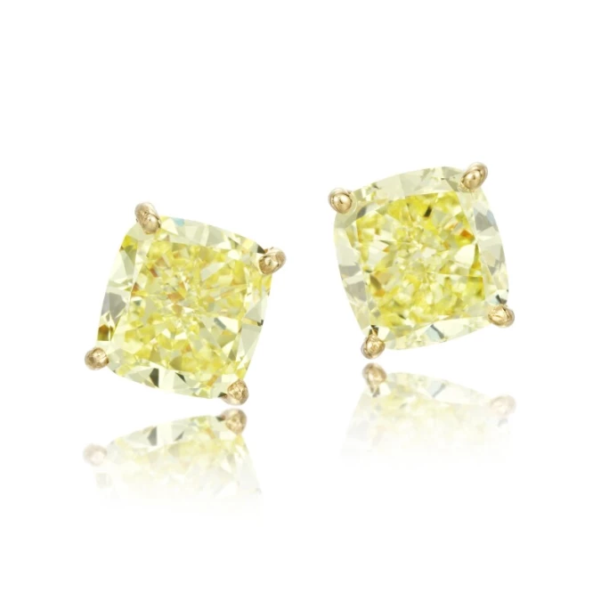

譯自 Lydia Dokko · Sotheby's
探索格拉夫高級珠寶系列如何將稀世美鑽化為璀璨生命，於每件傳世之作中巧妙融合深厚傳承、革新精神與超凡匠藝。
格拉夫的輝煌歷程
格拉夫（Graff）由勞倫斯·格拉夫（Laurence Graff）於 1960 年創立，是全球最負盛名的高級珠寶品牌之一。源自倫敦的格拉夫，憑藉無懈可擊的精湛工藝、令人屏息的絕美設計以及卓爾不凡的稀世鑽石，迅速奠定了其在珠寶界的尊崇地位。勞倫斯·格拉夫常被譽為「鑽石之王（King of Bling）」，懷揣著打造極致珍罕與尊貴獨特臻品的宏願，成功躋身競爭激烈的高級珠寶殿堂。時至今日，格拉夫依然是一家由家族執掌的企業，業務僅透過品牌專屬的實體精品店運營。

格拉夫高級珠寶
格拉夫之所以在眾多競爭者中卓然不群，關鍵在於品牌對珠寶創作流程的全然掌控。相較於卡地亞（Cartier）、蒂芙尼（Tiffany & Co.）及海瑞溫斯頓（Harry Winston）等主要專注於設計與銷售成品的珠寶名家，格拉夫悉心掌控著鑽石從原石開採、精密切割、細緻打磨直至最終傑作誕生的完整歷程。這種垂直整合的營運模式，使格拉夫得以維持無可比擬的品質標準與尊貴獨特。儘管此策略伴隨更高風險，卻能確保生產的每一環節均符合品牌的至臻標準，從而進一步鞏固格拉夫在高級珠寶領域的領先地位。

格拉夫 21.54 克拉鑽石戒指與格拉夫 16.06 克拉鑽石項鍊
高級珠寶品牌爭輝
在高級珠寶的璀璨星河中，格拉夫與業內眾多聲名顯赫的品牌同台輝映，其中包括蒂芙尼、海瑞溫斯頓、卡地亞、梵克雅寶及寶格麗。然而，格拉夫之所以能獨樹一幟，在於品牌擁有獲取全球頂級巨型珍罕寶石的渠道。格拉夫在鑽石切割領域的精湛技藝，以及搜羅稀世寶石的獨到眼光，使品牌在頂級奢華市場中傲視同儕。
相較於蒂芙尼主要服務廣泛客群的定位，格拉夫專注於金字塔頂端的尊貴客戶，珠寶作品的價格定位也遠高於前者。品牌作品的平均售價逾 10 萬美元，使其躋身全球最頂級尊榮的珠寶品牌之列。格拉夫持有南非鑽石公司（South African Diamond Corp，一家頂尖的鑽石原石批發與生產商）的多數股權，進一步強化其搜羅與甄選非凡寶石的實力。正是這種對獲取頂級美鑽的執著追求，奠定了格拉夫在高級珠寶界舉足輕重的翹楚地位。

格拉夫祖母綠切割鑽石戒指
格拉夫的鑽石傳奇
格拉夫鑽石戒指是全球無數人夢寐以求的奢華訂婚戒指。格拉夫向來以只甄選最瑰麗奪目的鑽石而聞名於世，從礦石開採到最終的匠心工藝，嚴格把控每道工序，確保品質完美無瑕。一如其他頂級珠寶品牌，格拉夫專攻鑲嵌 3 克拉及以上高品質鑽石的訂婚戒指。諸如茱兒·芭莉摩（Drew Barrymore）等名人均曾佩戴格拉夫訂婚戒指，她那枚 4 克拉方形切割戒指估價約為 8 萬美元。
格拉夫亦屢次在著名的拍賣殿堂上締造傳奇。蘇富比經常呈獻格拉夫鑽石戒指，矚目成交包括 2024 年 6 月以 140 萬美元售出的一枚 21.54 克拉橢圓形格拉夫鑽石戒指。此外，格拉夫的彩鑽戒指亦因其稀有與工藝卓越而備受藏家珍視。

格拉夫濃彩黃鑽配鑽石項鍊
一枚璀璨奪目的格拉夫濃彩黃鑽配鑽石項鍊，成為 2025 年 4 月 25 日香港蘇富比「高級珠寶」拍賣會的一大亮點。此項鍊鑲嵌 30 顆共重 38.45 克拉的切角長方形濃彩黃鑽，並以 D 至 F 色梨形鑽石及扇形圖案的梯形切割鑽石作點綴。項鍊附有格拉夫刻名及獨特編號，並附有 30 份美國寶石研究院（GIA）鑑定報告，證實黃鑽的天然色澤與超凡淨度。其設計大膽而不失精雅，充分體現了格拉夫在彩鑽領域的無雙造詣與高級珠寶的創新工藝。
格拉夫其中一顆最著名的鑽石當屬「Graff Pink」。此鑽原為一顆 24.76 克拉的濃彩粉鑽，勞倫斯·格拉夫於 2010 年在蘇富比拍賣上以 4,600 萬美元的驚人價格購得。經過精心的重新打磨，鑽石最終精煉至 23.88 克拉，達至天然艷彩粉紅內部無瑕 IIa 型的頂級評級。這一華麗蛻變，淋漓盡致地彰顯了格拉夫提升寶石天然美態，同時悉心保留其歷史意義的非凡能力。

一對格拉夫鑽石吊墜耳環
這對格拉夫鑽石吊墜耳環於 2025 年 2 月以 78 萬美元高價成交。耳環以梨形鑽石為主石，分別重 9.39 及 8.46 克拉，優雅懸垂於精緻的圓形鑽石飾鏈之下，完美展現出格拉夫對卓越工藝與匠心設計的執著追求。耳環以鉑金鑲嵌，總重約 11 克，每顆梨形主石均配有吊墜掛鉤，佩戴方式靈活多變，處處體現格拉夫對細節的精益求精。此次成交再次印證品牌在高級珠寶市場的恆久魅力，鞏固品牌作為全球頂級稀世瑰寶供應者的崇高美譽。
格拉夫亦將其精湛技藝延伸至鐘錶領域，其登峰造極之作當屬價值高達 5,500 萬美元的「Graff Hallucination」腕錶。此時計於 2014 年巴塞爾國際鐘錶珠寶展上驚艷亮相，其上鑲嵌逾 110 克拉的珍罕彩鑽，璀璨奪目。由 30 位格拉夫專家組成的團隊耗費無數工時精心打造此曠世傑作，進一步奠定格拉夫在奢華珠寶與寶石採購領域的權威地位。儘管此腕錶從未公開出售，亦足以作為格拉夫無與倫比的藝術造詣及其獲取全球最稀有鑽石超凡能力的有力證明。

格拉夫濃彩黃鑽配鑽石戒指
格拉夫珠寶的永恆魅力
自創立伊始，格拉夫便憑藉令人目眩神迷的創作，深深吸引世界各地的皇室貴族、名流巨星及高淨值人士。伊莉莎白·泰勒（Elizabeth Taylor）、奧花·溫費（Oprah Winfrey）、維多利亞·貝克漢（Victoria Beckham）以及汶萊蘇丹等顯赫人物皆為品牌的忠實擁躉。格拉夫素以與客戶建立長久穩固的深厚情誼而聞名，致力於提供無可比擬的專屬禮遇與度身訂造服務。
格拉夫珠寶在二級市場上備受追捧，蘇富比亦精心甄選品牌部分卓越珍品以饗藏家。品牌堅持只採用頂級鑽石，確保幾乎所有格拉夫作品的鑽石均達到 D 至 F 的色澤評級。設計美學是格拉夫魅力的另一關鍵要素，繁複精巧的鑲嵌工藝與雋永典雅的風格，完美襯托出每顆寶石的天然之美。在蘇富比的網上平台「Marketplace」上，格拉夫吊墜項鍊充分展現出品牌在鑽石排列與創新設計方面的精湛技藝。
道德採購是高級珠寶藏家至關重要的考量因素，格拉夫始終堅定恪守金伯利流程（Kimberley Process）認證，確保所有鑽石均為來源可靠的非衝突鑽石。這種對道德實踐的莊嚴承諾為品牌更添一層尊榮氣度，讓客戶在購藏奢華瑰寶的同時，亦能確保其來源正當且符合道德標準。

一對格拉夫彩黃色鑽石耳環
格拉夫是高級珠寶界的傑出品牌，以令人屏息的鑽石創作與對卓越品質的堅定承諾而享譽盛名。儘管品牌亦提供少量價格在 10 萬美元以下的作品，其大部分系列均為頂級奢華市場量身打造，價格遠超此門檻。格拉夫雖以精美絕倫的鑽石珠寶聞名於世，但也創作鑲嵌紅寶石、藍寶石、祖母綠以及一系列令人印象深刻的彩鑽（包括珍稀的黃鑽與粉紅鑽）的非凡作品。
真正令格拉夫卓爾不群的是品牌直接獲取最優質鑽石原石的獨特渠道、對完美無瑕工藝的執著追求，以及創造超越時光傳世傑作的堅定承諾。作為最受尊崇的高級珠寶世家之一，格拉夫不斷拓展奢華的疆界，繼續為世人呈獻前所未見的非凡瑰寶。
格拉夫鑽石何以如此珍貴？
格拉夫鑽石的尊貴價格，是卓越品質、稀世珍罕與大師級工藝完美融合的體現。每顆格拉夫鑽石均嚴選自全球頂級礦區，經精心切割與細緻打磨，以求最大限度地綻放其內在的璀璨光芒。品牌堅持只採用最頂級、往往是屢創紀錄的珍稀寶石，意味著即使是尺寸較小的作品也價格不菲。一枚經典的格拉夫鑽石戒指起價可能達數萬美元，而鑲嵌稀有彩鑽或巨型無瑕美鑽的高級珠寶作品則可能高達數百萬美元。格拉夫頂級珍品在拍賣會上的成交結果屢創歷史新高，充分反映市場對這些獨一無二曠世傑作的持久渴求。